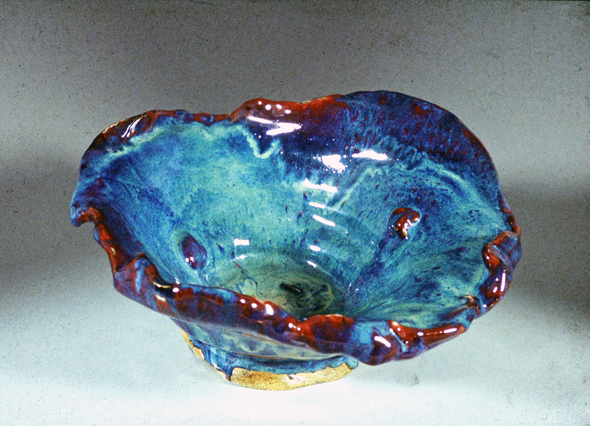

Brian Antar
a portfolio of entrepreneurship, art, music, & writing
a short autobiography -
I am a 27 year old entrepreneur, writer, and musician from Philadelphia, PA. I started playing the violin at age 5, and had toured throughout Italy & Spain before age 10. At age 13, I played a violin solo at the White House during the Bush administration soon after 9/11. Classical violin training developed a deep sense of self-discipline, high intensity attention to detail, and leadership at a young age. I became Concertmaster of the Philadelphia Young Artists Orchestra for 2 years, and eventually sat in the First Violin section of the Philadelphia Youth Orchestra, one of the top youth orchestras in the United States. We toured Brazil soon after I graduated from The Haverford School. The photo to the left was taken in the Theatro Municipal of Rio de Janeiro (younger brother Andrew is on the left). That particular concert was sold out to a crowd of over 1,700 people at full ticket price.
My passion for creative writing began in fifth grade. Mr. Richard Duffany, my first great English teacher, introduced me to the power of the written language with a simple exercise of drawing a clown and then describing all of it's features. The next year, I published my first poem in a poetry anthology. In high school, I studied for two years with one of my greatest mentors, Mr. Edward Hallowell, a Cambridge University educated scholar, who taught me the intricacies and subtleties of the English language. I graduated from the University of Pennsylvania in 2011 with a degree in English, and a concentation in Creative Writing. I have to thank my teachers for guiding me in that direction. Three years later, I graduated with a Masters in Liberal Arts with a concentration in Creative Writing from the University of Pennsylvania. For my Capstone project, I wrote a full length fiction novella about studying the violin, and have since extended it into a novel. It's still a work in progress.
During my undergraduate years, I started a technology startup company called hearo.fm with Andrew. We put together both our passions for music and technology, recruited a team of junior engineers from Penn and Brown University, and launched a Beta product two years later in Silicon Valley. Hearo.fm is a global music marketplace for artists & fans. Artists can upload and sell their music for whatever price they like, and sell direct-to-fan. Because all the content is user-generated, hearo.fm is a wonderful discovery platform for music all over the world. You can pan and zoom around a cool vector world map and listen to what's trending in different cities & small towns around the world. We created our own hybrid, non-exclusive stream & sell license for independent artists on the platform. On the backend, we built robust technology to handle the upload of massive lossless music files, which also compresses & converts those files into different high-fidelity download formats for fans. Hearo.fm went on to raise approximately $350K from private investors, including Andy Hertzfeld, the co-creater of the original Macintosh with Steve Jobs, and Neil Callari, a former ad executive for Saatchi & Saatchi based in Austin, Texas. The photo to the right is hearo.fm on the front page of the Business section in The Philadelphia Inquirer on August 28, 2015. While running hearo.fm, Andrew and I learned front-end web development technologies, including HTML5, CSS3, & JavaScript/jQuery, amongst others. I figured it was impossible to start a technology company without understanding how to code. Now, we both contribute to the design and front-end of hearo.fm.
Today, I am continuing my work on hearo.fm, as well as a few other projects including shop.ninja (an all-in-one, fully integrated shopping discovery site), my novel, and an importing & wholesale distribution company called Promo Power Group based in Philadelphia. Please see below for photos of some of my artwork, as well as links to my past and present projects. The hearo.fm sound card to the left is my recording of Pablo de Sarasate's Zigeunerweisen (Gypsy Airs), Op. 20 performed in 11th grade at age 17. Thank you for reading my short autobiographical summary and for visiting my portfolio website!
Brian
a selection of works -

The Violin Lamp, 2005
An old violin converted into a lamp. The fingerboard was removed and the neck of the violin was reconstructed to channel the wire.

The "Flower" Bowl, 2006
An abstract stoneware bowl intentionally manipulated, dipped in a copper Blood Red & Woo Blue glazes, and fired at over 2000° F.

"Rock Sculpture," 2006
A rock sculpture carved out of an entire block of stoneware clay and fired with iron oxide.

"Rolls-Royce Couch," 2006-2007
A Rolls Royce themed couch with two built-in lamps, custom-made folding tray tables with authentic restored hinges from a 1920's era Jaguar, the Spirit of Ecstasy, and of course, the Rolls-Royce logo. The couch was painted with latex white paint, which gives the couch a leatherette feel (and it doesn't peel or flake).
Spring Vase, 2005
Hand-thrown abstract vase. Made with stoneware clay, and dipped in Woo Blue coated Blood Red & Copper oxide glazes.

The Bar, 2007
I designed and constructed a fully featured wet bar out of Brazilian wood, with a complete & functional drainage system, cabinets, sliding doors, and shelves. See the full portfolio for more detailed pictures during and after construction. The pistol on top is an authentic 18th century British-made inlaid silver flintlock built for the Turkish market.
Get In Touch
Please feel free to contact me anytime. I usually respond within a day or two.


{kind=link}
{kind=link}